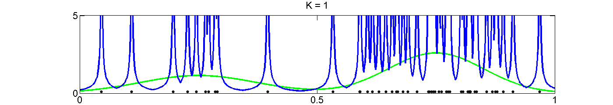
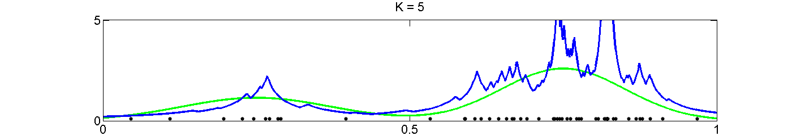
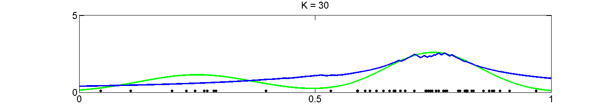

An illustration of density estimation with k-nearest neighbours.
Contrast this with parzenWindowDemo(), where rather than fixing the number of points, K, as we do here, we fix the window size.
% This file is from pmtk3.googlecode.com function knnDensityEstimationDemo() setSeed(0); mix = [0.35,0.65]; sigma = [0.015,0.01]; mu = [0.25,0.75]; n = 50; % number of training points %The true function, we are trying to recover f = @(x)mix(1)*gaussProb(x,mu(1),sigma(1)) + mix(2)*gaussProb(x,mu(2),sigma(2)); data = generateData; domain = 0:0.001:1; % also the test points kvals = [1 5 30]; for i=1:numel(kvals) setupFig(kvals(i)); plot(domain,f(domain'),'-g','LineWidth',2.5); plot(data, 0.1*ones(1,n), '.k','MarkerSize',14); window = growWindow(data,domain,kvals(i)); % estimate of the unconditional density p(x) = K/(nV) where the % volume V, in this 1D case, is just the window size. densityEst = kvals(i)./(window*n); plot(domain,densityEst,'-b','LineWidth',2.5); printPmtkFigure(sprintf('knnDensityEstimationDemoK%d', kvals(i))); end try placeFigures('nrows',numel(kvals),'ncols',1,'square',false) catch %#ok If there are too many to fit on the screen with this % configuration, let placeFigures determine the best layout % automatically. placeFigures(); end function data = generateData() %Generate data from a mixture of gaussians. pdf1 = @(n)gaussSample(struct('mu', mu(1), 'Sigma', sigma(1)), n); pdf2 = @(n)gaussSample(struct('mu', mu(2), 'Sigma', sigma(2)), n); data = rand(n,1); nmix1 = data <= mix(1); data(nmix1) = pdf1(sum(nmix1)); data(~nmix1) = pdf2(sum(~nmix1)); end function window = growWindow(trainingPoints,testPoints,K) % For every point in testPoints, determine the minimum window % centered on the test point, containing exactly K trainingPoints. Here % a window is just a contiguous region on the x-axis. % for every point in trainingData, calculate the euclidean distance % to every point in testPoints resulting in a matrix of size % numel(trainingPoints)-by-numel(testPoints). euclidDist = @(a,b)sqrt(sum((a-b).^2,2)); dist = bsxfun(euclidDist,trainingPoints,testPoints); % find the nearest K training points to each test point. sorted = sort(dist,1); nearestK = sorted(1:K,:); window = 2*max(nearestK,[],1); end function setupFig(k) figure; hold on; axis([0,1,0,5]); set(gca,'XTick',0:0.5:1,'YTick',[0,5],'box','on','FontSize',16); title(['K = ',num2str(k)]); scrsz = get(0,'ScreenSize'); left = 20; right = 20; lower = 50; upper = 125; width = scrsz(3)-left-right; height = (scrsz(4)-lower-upper)/3; set(gcf,'Position',[left,scrsz(4)/2,width, height]); end end  